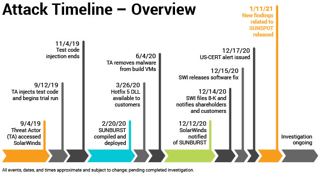
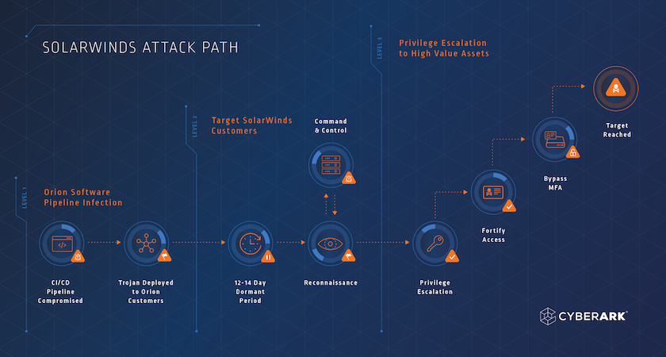

• RECONNAISSANCE In early 2020, hackers secretly broke into Texas-based SolarWind's systems and added malicious code into the company's software system. The system, called "Orion," is widely used by companies to manage IT resources. Solarwinds has 33,000 customers that use Orion, according to SEC documents.
• WEAPONIZATION Beginning as early as March of 2020, SolarWinds unwittingly sent out software updates to its customers that included the hacked code. The code created a backdoor to customer's information technology systems, which hackers then used to install even more malware that helped them spy on companies and organizations.
• DELIVERY The SolarWinds company sent a software update which contains malicious code dropped by hackers to their customers.
• EXPLOITATION When the customers of SolarWinds executed the update the code entered their systems immediately.
• INSTALLATION Hackers install the malicious code to the software update. • COMMAND AND CONTROL Attackers had gained control when the code got into the companies systems and their goal was learning confidential information about the companies.
• ACTIONS ON OBJECTIVES Intruders accomplished their goals by infiltrating the company software and systems.
 1- Initial Compromise: The attackers, believed to be state-sponsored, gained unauthorized access to SolarWinds' systems and injected a malicious code into the software update process for their Orion platform. This software is used by numerous organizations, including government agencies and businesses, to monitor and manage their IT infrastructure. 2- Malicious Software Distribution: The compromised Orion software updates, which contained a backdoor called Sunburst or Solorigate, were signed with legitimate SolarWinds digital certificates. This made it difficult for security measures to detect the malicious activity. 3- Widespread Impact: Organizations that downloaded and installed the compromised Orion software updates unknowingly introduced the backdoor into their systems. This gave the attackers unauthorized access to their networks, enabling them to gather sensitive information and potentially carry out further attacks. 4- Lateral Movement and Data Exfiltration: Once inside the networks, the attackers took advantage of their access to move laterally across systems, escalate privileges, and access valuable data. They focused primarily on stealing information rather than causing immediate disruption. 5- Detection and Mitigation: The SolarWinds attack went undetected for several months until it was discovered by the cybersecurity firm FireEye, which itself had been a victim of the attack. The incident triggered a large-scale investigation, with many organizations scrambling to determine the extent of the compromise and take appropriate remedial actions. 6- Attribution: The attack has been attributed to a state-sponsored group known as APT29 or Cozy Bear, believed to be associated with the Russian government. However, it's important to note that attribution in cyberattacks can be complex and subject to ongoing investigations.